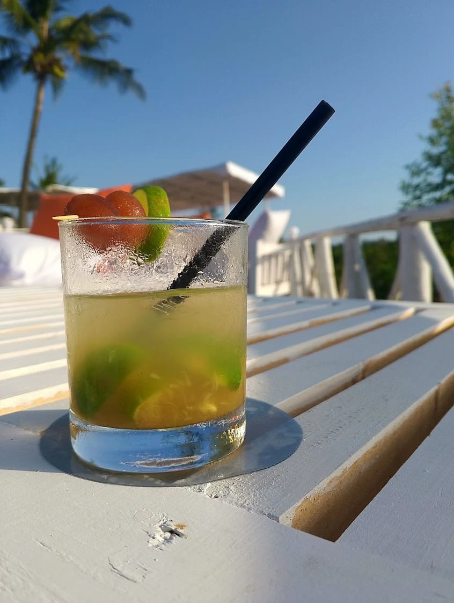
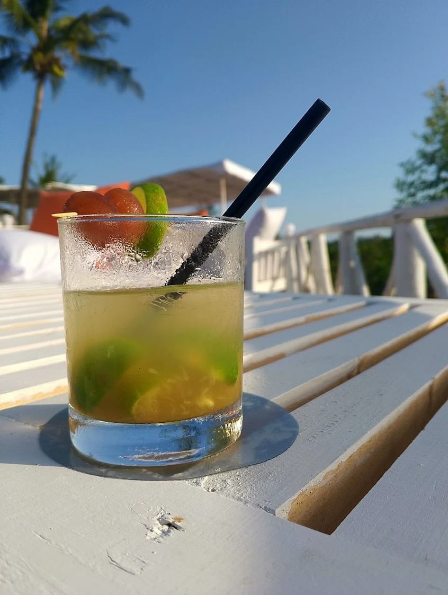

Experience the Breathtaking Views
A serene escape offering delicious food and breathtaking sunset views.
Discover the Peninsula Experience
Escape to a world of culinary delight, where breathtaking sunsets meet the gentle rhythm of the Mtwapa Creek. Peninsula offers a tranquil escape with fresh, locally sourced seafood, thrilling water adventures, and the perfect ambiance for any occasion. Witness the sky paint itself in gold and crimson during our Sundowner Experience, or host a memorable event against our stunning backdrop.
Read More
 

What People Are Saying
Leave a reviewBook Your Unforgettable Experience
Reserve your table today and get ready to indulge your senses.
Book Now